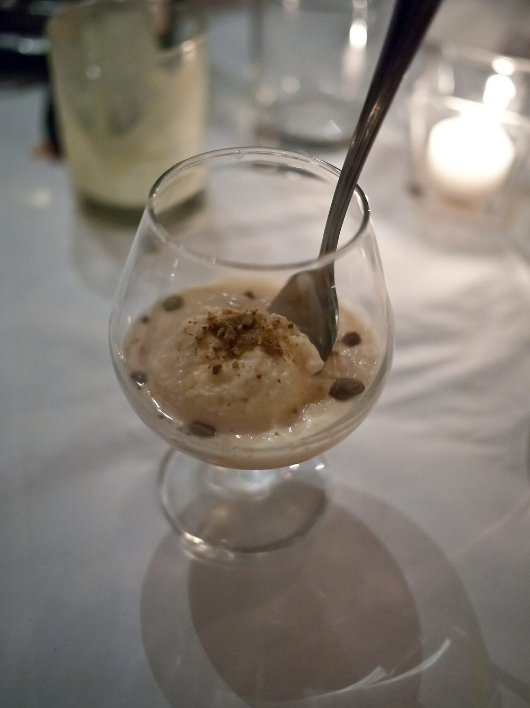

Gujarati Basundi
milk reduced slowly to a thick grainy cream, scented with cardamom and saffron

Contains: milk, tree nuts
Ingredients
Quantities for 4.
- 1.5 litres, full-fat Milk
- 100g Sugar
- a pinch Saffron
- 1/2 tsp, seeds ground Cardamom
- 2 tbsp, slivered Almondsoptional
- 2 tbsp, slivered Pistachiosoptional
- a scraping Nutmegoptional
Cookware
stovetop, kadhai
Checked against the ingredient list for ten allergens: milk, egg, fish, crustaceans, tree nuts, peanuts, sesame, mustard, soy and gluten. Brands vary, so read the label on anything new to you.
Before you start
- Use a wide, heavy-based pan. A narrow deep pot doubles the reduction time and scorches the base.
- Rinse the pan with water and pour it out before adding the milk. A wet pan is far less likely to catch.
- Set aside a full hour of low-attention stirring. Basundi cannot be hurried on high heat.
Method
- Bring the milk to a boil in a wide heavy pan over medium heat, stirring so it does not stick.
- Lower the heat and simmer, stirring every few minutes and scraping the base each time.Scrape the base, not just the surface. The burnt taste comes from what settles.
- As a skin forms at the edges, keep pushing it back into the milk. These layers are what make basundi grainy rather than smooth.
- Crush the saffron into 2 tbsp of the hot milk and set it aside to bloom.
- Continue reducing for 45-55 minutes, until the milk has come down to about half its volume and coats a spoon thickly.
- Add the sugar and cook 8 minutes more; the milk will loosen briefly, then thicken again.Add sugar only near the end. Early sugar makes the milk catch and darken.
- Stir in the saffron milk, ground cardamom and nutmeg, and take the pan off the heat.
- Cool to room temperature, then chill 3 hours; it thickens noticeably as it cools.Judge the final consistency cold, not hot, or you will over-reduce it.
- Serve cold in small bowls with the almonds and pistachios scattered over, or warm alongside puris.
Storage
Keeps 3 days refrigerated in a covered bowl. Reheat gently over low heat with a splash of milk if you prefer it warm; it thickens further each day.
Nutrition Medium estimate
Medium protein: 15 g a serving, 15% of the calories
| Per serving427 g | Per 100 g | |
|---|---|---|
| Calories | 420 kcal | 99 kcal |
| Protein | 15.3 g | 4 g |
| Carbohydrate | 47.6 g | 11 g |
| of which sugars | 45.4 g | 11 g |
| Fibre | 1.9 g | 0 g |
| Fat | 19.8 g | 5 g |
| of which saturated | 7.9 g | 2 g |
| of which unsaturated | 10.1 g | 2 g |
Ingredients given to taste count as zero, so the real figures run a little higher. Estimated from raw ingredients using USDA FoodData Central.
More like this: Vegetarian Indian recipes · Gluten-free Indian recipes · No onion no garlic recipes · Gujarati recipes
Times, yields, allergens and nutrition are guidance. Use your own judgement on doneness and on storing. More in About.